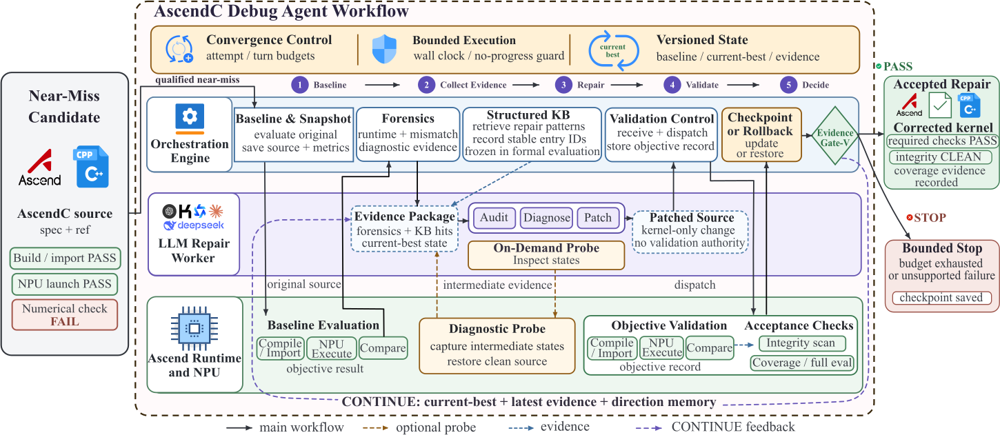

一个可安装的 Skill
drdebug
论文引擎、工具与 10 个历史参考案例一起安装，不依赖原 checkout，也不启动嵌套编码智能体。
- 取得确定性证据
引擎复现失败，返回绑定源码身份的修复请求。
- 使用宿主自己的模型与工具
读取完整指令，只修改隔离的候选文件。
- 由验证决定接纳
全量测试、完整性、检查点与回滚由引擎掌握。
已实测 Claude Code · Codex · Kimi Code · 51 例验收 ↗
查看 Skill 源码算子精度修复智能体ASCEND NPU
一个几乎正确的算子，是继续前进的起点。DRDebug 从失败证据出发，定向修复已有内核，让确定性的验证决定每次修改能否留下。
FP16 ReduceSum · 参考为高精度求和
x = [2048, 1, -2048]2048 + 1 → 2048FP16 舍入，小量在这里丢失− accumulator: FP16+ accumulator: FP32伪代码 · 对齐参考语义，输入/输出仍为 FP16。
2048 → 2049 → 1误差 = 06 组构造回归：3/6 → 6/6 通过。
官方聚合名Debug-Agent Claude Code Kimi K3
01 / 真实评测
在 CANNBench 官方 A3 任务中，我们的聚合方案通过的测试用例数排名第一；在完整覆盖测试集的方案中，全量与 Level4 通过率也均排名第一。
LEVEL 4 · 最高难度等级
99.88%
Level 4 是 CANNBench Official-Tasks 的最高难度等级，涵盖注意力、循环网络与融合计算。8 个算子任务共 800 个测例：标准集 160 例，隐藏集 640 例。
LEVEL 4 · 剩余未通过用例
两者均覆盖全部 800 例；DRDebug 多通过 11 例。
越少越好 · 坐标从零开始
选择算子，查看标准集与隐藏集明细。
7 个算子通过 100/100 例；MlaProlog 通过 99/100 例。
快照：2026 年 10 月 15 日 15:14（UTC+8）。Official Tasks，版本系列 1.1、任务包 1.1.2；A3 / Ascend 910C。全量为 53 个算子 × 100 例，共 5,300 例（标准集 1,060 + 隐藏集 4,240）；Level4 为 8 个算子 × 100 例，共 800 例。
通过率排名仅比较完整覆盖的方案：全量 15 个、Level4 19 个；通过数在 170 个公开聚合方案中排名第一。这里的排名指正确性，不等同于榜单综合得分；本快照中该聚合方案综合得分排名第六。页面采用带日期的快照，并非实时数据。
02 / 修复闭环
大语言模型提出补丁，确定性引擎负责取证、完整验证与结果接纳。一次有效的修复，必须经得起暴露问题的同一套测试。
01 / 先让失败可复现
保留已有候选，先建立可复现的失败。引擎记录构建、运行与精度证据，再交由工作智能体提出修改。
机制示意 · 非实时执行日志

放大查看 ↗03 / 安装与使用
任选已有宿主：Claude Code、Codex、使用 Kimi 的 Agent 或其他兼容智能体。宿主使用自己的模型和工具，DRDebug 执行确定性修复协议。
一个可安装的 Skill
论文引擎、工具与 10 个历史参考案例一起安装，不依赖原 checkout，也不启动嵌套编码智能体。
引擎复现失败，返回绑定源码身份的修复请求。
读取完整指令，只修改隔离的候选文件。
全量测试、完整性、检查点与回滚由引擎掌握。
已实测 Claude Code · Codex · Kimi Code · 51 例验收 ↗
查看 Skill 源码git clone https://github.com/Shenxiu-WU/DRDebug.git
cd DRDebug
./install.sh --codex安装到 ~/.agents/skills/drdebug
使用宿主实际识别的 skills 父目录，使用 Kimi 的 Agent 也采用此入口。安装器创建 drdebug/，宿主加载 SKILL.md，用自己的工具读取请求、编辑文件并执行 CLI。
准备 → 交接 → 验证
next读取请求 ID、证据、候选目录与完整指令文件。宿主编辑修改隔离候选，向 result_file 写真实回复及必要元数据。submit提交同一请求与结果文件；引擎验证并推进，循环到终态后再独立 verify。然后，对宿主说
使用 drdebug 和你当前的模型与工具，创建独立工作区，按 next/submit 请求修复，再独立验证被接纳的源码。
安装仅需 Python 3.10+ 与标准库；数值执行还需 Linux + 昇腾 NPU、兼容 CANN/AscendC、Torch/torch_npu、NumPy 与构建工具。模型访问与 SSH 由宿主管理，doctor 不检查编码智能体 CLI。
新任务最多 5 次尝试、86,400 秒总墙钟，包含等待宿主的时间。原生宿主 Cumsum 验证另有完整记录；旧 run 入口已退役。
安装与首次宿主修复指南04 / 最新研究
我们最新的研究工作关注一个具体问题：当生成的算子已经接近正确，定向调试能否比重新生成找回更多可交付结果？我们在固定近成功候选上研究修复效果与 token 开销，并将这套修复思路延伸到 CANNBench。
最新研究工作 · ARXIV 2026
研究采用来自 NPUKernelBench 的 27 个固定近成功算子，比较修复效果与 token 开销。这组论文实验与上方 CANNBench 排行榜成绩分别呈现。
27 个固定近成功算子
同一修复思想，两种互补的评测视角。
01 / 论文评测
围绕归约、归一化、索引与融合计算等典型业务算子，在 27 个固定近成功候选上研究定向修复。
02 / 社区评测
采用统一评测基准；本页 A3 快照覆盖 53 个官方任务，每任务包含 20 个标准测例与 80 个隐藏测例。
两组评测的任务集合与测例设置不同，论文实验与排行榜成绩分别报告。
05 / 代码与证据
从实现细节到公开快照，继续了解这个项目。